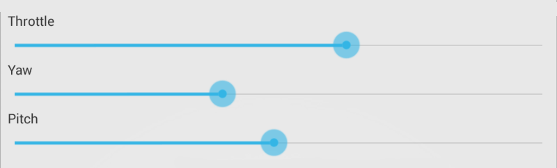

Steering

Fine-tune flight characteristics with these sliders
- Throttle Controls how high the Orbit will fly when activated. As battery power drops this setting may need to be increased in order to maintain a consistent response.
- Yaw Controls the clockwise and counter-clockwise rotation of the Orbit.
- Pitch Controls the forward/backward motion of the Orbit helicopter. This is achieved by operating the small propeller at the top of the Orbit.
←
↑
→